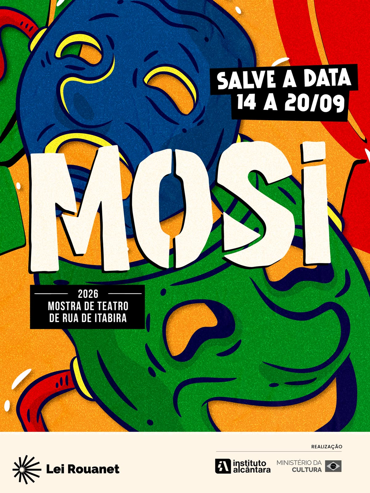
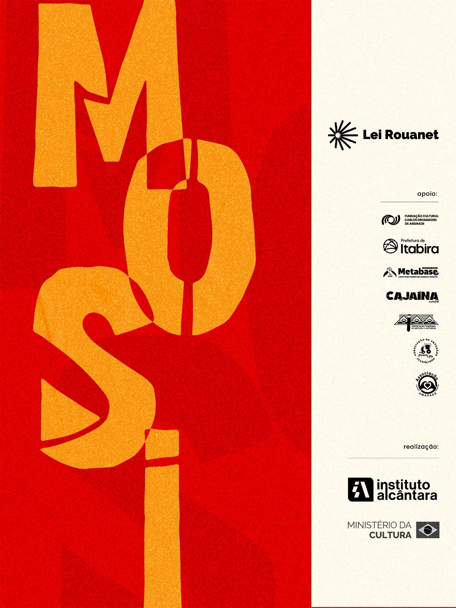

Bate-papo
Encontro com Ílvio Amaral e Maurício Canguçu
- 17/09 às 14h
- Auditório do Sindicato Metabase
Uma conversa sobre trajetória, criação, teatro e os 28 anos de “Acredite, Um Espírito Baixou em Mim”.
14 a 20 de setembro de 2026
Mostra de Teatro de Rua de Itabira
De 14 a 20 de setembro, Itabira se transforma em um grande palco de encontro, arte e participação. Teatro, circo, dança, música, cortejos, oficinas e economia criativa. Tudo gratuito.
Praça do Pará e outros espaços de Itabira/MG
A rua é o palco.
A cidade é o encontro.

O MOSI
O MOSI, Mostra de Teatro de Rua de Itabira, chega à sua primeira edição para aproximar artistas e comunidades, ocupar os espaços públicos e ampliar o acesso da população à cultura.
De 14 a 20 de setembro de 2026, a cidade recebe uma programação gratuita formada por apresentações de teatro, circo, dança e música, além de cortejos, oficinas, bate-papos e Feira de Artesanato e Economia Criativa.
Criado pelo Instituto Alcântara, o MOSI reconhece a cultura como caminho para o pertencimento, a memória, a formação de pessoas e a diversificação econômica das cidades mineradas.
Programação
A primeira edição do MOSI começa com a cidade em movimento. Em 17 de setembro, três cortejos partem de diferentes pontos de Itabira e seguem até a Praça do Pará, reunindo tradição, música, palhaçaria e participação popular. Na chegada, os grupos serão recebidos pelo Tumbaitá, preparando o público para a abertura oficial.
Bate-papo
Uma conversa sobre trajetória, criação, teatro e os 28 anos de “Acredite, Um Espírito Baixou em Mim”.
Cortejo
Tradição, fé, memória e ancestralidade abrem os caminhos do MOSI em um cortejo até a Praça do Pará.
Cortejo
Cia Tramp de Palhaços
A Cia Tramp ocupa as ruas com música, comicidade e o encontro direto entre palhaços e público.
Cortejo
O grupo Xequeritas segue em cortejo até a Praça do Pará, integrando ritmo, presença e participação coletiva.
Cultura popular
O Tumbaitá recebe os cortejos na Arena Encontro e marca a chegada dos grupos ao coração da programação.
Abertura
Cerimônia de abertura da primeira edição da Mostra de Teatro de Rua de Itabira.
Teatro
Cangaral Produções · Belo Horizonte/MG
Um espírito inconformado foge do céu para viver novas experiências e acaba incorporando um machista radical. A partir desse encontro improvável, a comédia cria uma sucessão de confusões e situações de humor. Com Ílvio Amaral e Maurício Canguçu, o espetáculo celebra 28 anos em cartaz.
Teatro
Grupo de Teatro Às Avessas · Belo Horizonte/MG
Em um reino governado por um tirano, uma nova lei é imposta: a Lei do Engole-Choro. Sem espaço para emoções delicadas, o povo passa a reprimir seus sentimentos. Inspirada na literatura de cordel, a montagem combina teatro, música, poesia e humor para falar de liberdade, afeto e resistência.
Teatro
Grupo Carroça Teatral · Sete Lagoas/MG
Baseado no cancioneiro popular, o espetáculo reflete sobre os rompimentos de barragens de rejeitos em Mariana e Brumadinho. A trama acompanha um casal apaixonado que, depois de enfrentar o coronelismo, é surpreendido pelo rompimento de uma barragem e busca força nas tradições afro-mineiras em meio aos escombros.
Teatro
Leonardo Miggiorin e Tozi Produções · São Paulo/SP
Com texto e direção de Giovani Tozi, a montagem reúne poesia, humor, superação e reflexões sobre saúde mental, com doses poéticas de Carlos Drummond de Andrade. Leonardo Miggiorin conduz o público por uma obra contemporânea marcada pela brasilidade e pela esperança.
Música
Priscila Tossan · Rio de Janeiro/RJ
Cantora e compositora, Priscila Tossan ganhou projeção nacional após sua participação no The Voice Brasil. Com identidade vocal marcante, transita pela música brasileira e reúne em seu percurso lançamentos autorais, parcerias e apresentações em importantes palcos do país. No MOSI, apresenta show em formato de voz e instrumentos.
Teatro
Grifo Teatro · Jundiaí/SP
O Grifo Teatro apresenta “Chica, a Princesa Errante” na Arena Encontro. A montagem integra a programação gratuita da primeira edição do MOSI e convida públicos de diferentes idades a viver o teatro de perto, no espaço compartilhado da praça.
Dança
Art & Move · Itabira/MG
MOTUS é uma performance de dança urbana que investiga o movimento como linguagem de expressão, conexão e transformação. Corpo, espaço, ritmo e coletividade se encontram em uma composição que valoriza tanto a força do grupo quanto a identidade de cada intérprete.
Circo
Circo do Sufoco · Belo Horizonte/MG
Um encontro circense construído com comicidade, movimento e relação direta com o público. “Corações Trapezistas” leva à Arena Encontro a energia do circo e transforma a praça em espaço de surpresa, convivência e imaginação.
Música
Banda Brazuza · Itabira/MG
A Banda Brazuza apresenta um show dedicado à obra de Cazuza. O repertório percorre canções que marcaram o rock brasileiro e convida o público a cantar junto em uma noite de memória, intensidade e celebração.
Cultura popular
Os Congados de Itabira abrem o último dia de programação, levando tradição e ancestralidade à Praça do Pará.
Bate-papo
Com Gilson de Barros
Encontro sobre a obra de João Guimarães Rosa e os caminhos de criação de “Grande Sertão: Veredas - Riobaldo”.
Circo
Cia Tramp de Palhaços · Jundiaí/SP
Música, circo e palhaçaria se encontram neste espetáculo inspirado nas antigas charangas dos circos. Os palhaços Chimpa, Filomeno, Pompeu e Lechuga apresentam acrobacias, mágica, canções, números cômicos e referências aos circos mambembes que percorreram o interior do Brasil.
Teatro
Gilson de Barros
Gilson de Barros apresenta um mergulho cênico no universo de João Guimarães Rosa. A partir da voz de Riobaldo, o espetáculo aproxima o público das travessias, dúvidas, afetos e conflitos humanos que atravessam “Grande Sertão: Veredas”.
Música
Fran Januário
O Samba da Januário encerra oficialmente a primeira edição do MOSI com uma celebração da música, do encontro e da cultura popular. O show convida o público a ocupar a Praça do Pará e concluir a programação em clima de festa e convivência.
Nenhuma atividade nesta combinação de dia e categoria.
A programação pode sofrer alterações. Acompanhe os canais oficiais do Instituto Alcântara para confirmações e novidades.
Formação
A formação também ocupa um lugar central no MOSI. A programação reúne oficinas de circo, corpo-máscara, jogos teatrais, criação de personagens e cortejo. As atividades promovem experimentação, convivência e contato com diferentes linguagens artísticas.
As oficinas abertas ao público são gratuitas e possuem vagas limitadas. A inscrição não garante automaticamente a participação. As pessoas selecionadas receberão confirmação pelo WhatsApp informado no formulário.
Inscrição aberta
Grifo Teatro
Sede do Instituto Alcântara, bairro Pará
Jogos teatrais, improvisações e exercícios corporais conduzem à criação de personagens vivos e expressivos.
INSCREVER-SEInscrição aberta
Grupo Carroça Teatral
Cajaina Cultural
Formação dedicada à musicalidade da cena, ao corpo, ao canto, à memória e ao deslocamento na construção de um cortejo.
INSCREVER-SEPúblico escolar
Circo do Sufoco
E.M. Professora Didi Andrade
Vivência prática com malabarismo, equilibrismo, acrobacia, mágica e jogos circenses. Atividade destinada ao público escolar, sem inscrição pelo site.
Público escolar
Grupo de Teatro Às Avessas
E.M. Cornélio Penna
Formação que investiga o corpo como território de transformação, reunindo máscaras, musicalidade, ritmo e manifestações populares. Atividade destinada ao público escolar, sem inscrição pelo site.
Inscrição
O MOSI 2026, Mostra de Teatro de Rua de Itabira, realiza sua primeira edição com oficinas gratuitas e vagas limitadas.
A inscrição não garante automaticamente a participação. As pessoas selecionadas receberão a confirmação pelo WhatsApp e deverão participar de todos os encontros da oficina escolhida.
O envio automático ainda não está ligado. Enquanto isso, faça sua inscrição pelo WhatsApp (31) 2026-0374 ou pelo e-mail junia.institutoalcantara@gmail.com.
Obrigado pelo interesse nas oficinas do MOSI 2026. A inscrição não garante automaticamente a vaga. As pessoas selecionadas receberão a confirmação pelo WhatsApp informado.
MOSI 2026 · A rua é o palco. A cidade é o encontro.
Acessibilidade
O MOSI adota o conceito de Evento Inclusivo 360, integrando acessibilidade vertical e horizontal à experiência do público. Consulte em cada atividade os recursos confirmados, as condições dos espaços e os canais disponíveis para solicitar apoio.
Os ajustes ficam salvos neste navegador.
Fale com a organização antes do evento para combinar o recurso necessário para a sua participação.
SOLICITAR APOIO DE ACESSIBILIDADEDe 17 a 20 de setembro, a Feira de Artesanato e Economia Criativa reúne associações, artesãos e expositores locais no bairro Pará. A iniciativa valoriza o trabalho criativo, fortalece a geração de renda e aproxima moradores e visitantes da produção cultural de Itabira.
Entrada gratuita, no bairro Pará.
A programação pública se concentra na Praça do Pará, onde funcionam o Palco MOSI e a Arena Encontro.
As oficinas e os bate-papos acontecem na sede do Instituto Alcântara, na Cajaina Cultural, em escolas municipais e no Auditório do Sindicato Metabase.
Os cortejos de abertura partem de três pontos da cidade e seguem até a praça.
Queremos que o MOSI seja um encontro verdadeiro entre a cidade e os artistas. Quando a arte ocupa a rua, ela deixa de esperar que o público chegue até ela e passa a fazer parte da vida das pessoas. Para Itabira, uma cidade profundamente marcada pela mineração, investir em cultura também significa criar novas possibilidades de desenvolvimento, pertencimento e futuro.
Marcos Alcântara, diretor-presidente do Instituto Alcântara
Área de imprensa
Nesta área, jornalistas e veículos de comunicação encontram o release oficial, a programação completa, logomarcas, fotografias em alta resolução, legendas, créditos e informações para entrevistas.
Contato para imprensa: gestaoinstitutoalcantara@gmail.com
Ministério da Cultura e Instituto Alcântara apresentam.
Projeto realizado por meio da Lei Rouanet.
Apoio: Fundação Cultural Carlos Drummond de Andrade, Prefeitura de Itabira, Sindicato Metabase, Cajaina Cultural, Associação Itabirana de Artistas e Artesãos, Associação de Artesãos Fazendo Arte Itabirano e Associação Amapará.

{kind=link}
{kind=link}